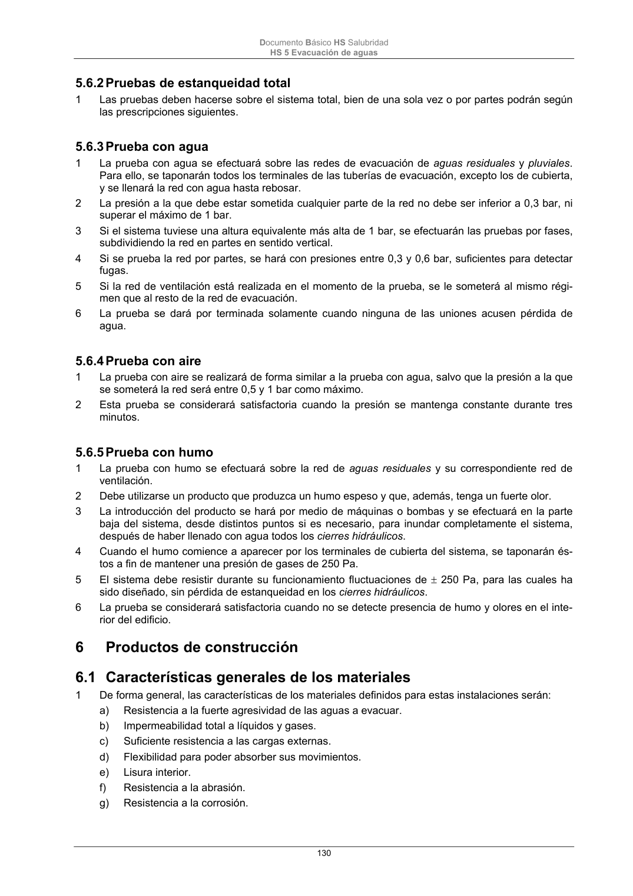

DB-HS Salubridad · edición 2022-06-14 · capa oficial
Documento DB-HS-oficial · SHA-256 del PDF 68df3caacc95f71aee2ec1ba7b2c65ae66155c21e3a8785521b8fdd4fd640d3b
Copia fiel del PDF fuente · Fuente oficial
Ficha de la disposición en la fuente oficial
Formatos: JSON del segmento · Markdown
Productos de construcción 6.1 Características generales de los materiales 6.1 Características generales de los materiales 1 De forma general, las características de los materiales definidos para estas instalaciones serán: a) Resistencia a la fuerte agresividad de las aguas a evacuar. b) Impermeabilidad total a líquidos y gases. c) Suficiente resistencia a las cargas externas. d) Flexibilidad para poder absorber sus movimientos. e) Lisura interior. f) Resistencia a la abrasión. g) Resistencia a la corrosión. Documento Básico HS Salubridad HS 5 Evacuación de aguas 131 h) Absorción de ruidos, producidos y transmitidos.
